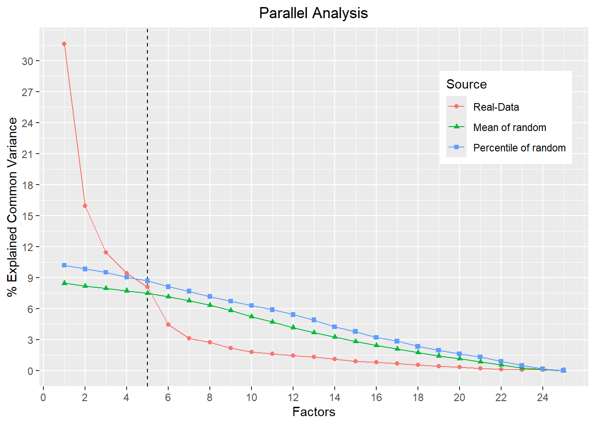

5 Exploratory Factor Analysis
Exploratory Factor Analysis (EFA) is a statistical tool that serves several purposes. In social sciences (e.g., Psychology, Education) it has served the general purpose of reducing the number of dimensions/factors of a scale or instrument. That is, reducing the number of parameters to the number of latent traits/psychological constructs. It serves the purpose of seeking evidence of validity of internal structure of an instrument.
Thus, we can define the objective of EFA as follows: Evaluate the dimensionality of a series of indicators in order to identify the smallest number of latent traits that explain the pattern of correlations (Osborne, 2014).
More formally, the Common Factor Model sees the covariance between observable variables as a reflection of the influence of one or more factors and unexplained variance. The items are considered indicators that vary according to the level of the latent trait, that is, the higher your level of Depression, the greater your agreement with the item “I have been feeling depressed”.
What would be the point of carrying out an EFA? To reduce the number of parameters we have and group it into one or more latent traits. In other words, instead of having 21 different indicators that assess Depression/Anxiety/Stress, we reduce it to 3 indicators (latent traits) that explain the variance of the items. EFA divides between common variance and unique variance. Common variance concerns the shared influence of latent traits on an indicator. Unique variance can represent two things: item variation that reflects unknown latent causes; and random error given unreliability or measurement error.
The common factor model is based on the mechanics of linear regression, and specifies that the observable data reflect a linear combination of latent trait influence. If we have 1 indicator/item, representing m factors, we have the following notation:
Item1 = \(ùõå_{i1}\eta_1 + ùõå_{i2}\eta_2 + ...+ùõå_{im}\eta_m + ùõÜ_i\)
Where: \(ùõå_{im}\) = the strength of the association between the factor \(m\) and the indicator \(i\);\(ùõÜ_i\) = the error in the indicator \(i\); \(\eta\) = the factor of number \(m\).
If we have 5 indicators/items represented by 3 factors we have the following notation:
Item1 = \(ùõå_{11}\eta_1 + ùõå_{12}\eta_2 + ùõå_{13}\eta_3 + ùõÜ_1\)
Item2 = \(ùõå_{21}\eta_1 + ùõå_{22}\eta_2 + ùõå_{23}\eta_3 + ùõÜ_2\)
Item3 = \(ùõå_{31}\eta_1 + ùõå_{32}\eta_2 + ùõå_{33}\eta_3 + ùõÜ_3\)
Item4 = \(ùõå_{41}\eta_1 + ùõå_{42}\eta_2 + ùõå_{43}\eta_3 + ùõÜ_4\)
Item5 = \(ùõå_{51}\eta_1 + ùõå_{52}\eta_2 + ùõå_{53}\eta_3 + ùõÜ_5\)
5.1 Why is it Called Exploratory?
It is generally more used as data-driven, that is, it does not presuppose the behavior of the relationship between the variables and their factors. In EFA, the number of factors that appear in the data is generally tested, and the items have factor loadings on both their hypothesized factor and the other factors. On the other hand, in a Confirmatory Factor Analysis, the parameters are fixed and the items load (generally) only on their respective factors. However, they are not atheoretical, since you need to have a theory to build a scale. For instance, I might have a theory about behavioral intent that encompasses a 3-factor model. Thus, I’d build items that measures those 3 factors.
5.2 EFA Step-by-step
EFA has, mainly, 4 steps.
Verification of data adequacy
Factor Retention
Factor Extraction
Factor Rotation
I’ll explain each one of them below.
5.2.1 Data adequacy
To test whether the data we have is suitable for doing an EFA, we generally use two criteria: Bartlett test of sphericity and Kaiser-Meyer-Olkin (KMO).
5.2.1.1 Bartlett’s test of sphericity
This test verifies the hypothesis that the variables are not correlated in the population. Thus, its hypothesis says that the population correlation matrix is an identity matrix. If the correlation matrix is an identity matrix, the factor model is inappropriate, given that there is no correlation between the variables. See an example of an identity matrix below, imagine that this matrix below is the correlation matrix between items of an instrument.
\[ \begin{bmatrix} 1 & 0 & 0 & 0\\ 0 & 1 & 0 & 0\\ 0 & 0 & 1 & 0 \\ 0 & 0 & 0 & 1 \end{bmatrix} \] The statistical part behind the test is given by the following equation:
\(χ² =- [(n-1)-\frac{(2v+5)}{6}]*log(det(R))\)
Where:
n = sample size;
v = number of variables;
det(R) = determinant of the correlation matrix;
Values from Bartlett’s test of sphericity with significance levels of p < 0.05 indicate that we can proceed with an EFA (Tabachnick & Fidell, 2007).
5.2.1.2 Kaiser-Meyer-Olkin (KMO)
Evaluates the adequacy of the factor analysis, indicating the proportion of variance in the items that may be caused by factors. KMO checks whether the inverse correlation matrix is close to the diagonal matrix by comparing the values of the observed linear correlations with the values of the partial correlations. The formula of KMO is
\(KMO = \frac{\sum \sum_{j \neq k}{r^2_{jk}}}{\sum \sum_{j \neq k}{r^2_{jk}}+\sum \sum_{j \neq k}{q^2_{jk}}}\)
Where:
\(r_{jk}^2\) = is the square of the elements of the original off-diagonal correlation matrix;
\(q_{jk}^2\) = is the square of the partial correlation between the variables;
The KMO index values indicating the appropriateness of factor analysis can vary among different authors. For instance, Hair et al. (2006) suggest that KMO values between 0.5 and 1.0 are acceptable, with values below 0.5 indicating that factor analysis may not be suitable for the dataset. On the other hand, Kaiser & Rice (1974) propose a more stringent criterion, indicating that for the factor analysis model to have adequate fit, the KMO value should exceed 0.7.
5.2.2 Factor Retention
Given that computer software will extract as many factors as there are items in the analyses, and for the purpose of EFA, we have to decide how many extracted factors we should retain for subsequent analyses. We have some methods to decide:
5.2.2.1 Kaiser Criterion (1960, 1970)
This criterion proposes that eigenvalues greater than 1 are a good parameter for the factor to be significant. This rule reflects the intuition that the factor must take into account the variance of at least one indicator. Thus, the eigenvalue is the sum of the squared factor loadings of the items, which represents the variance in each item that can be explained by the factor. The Kaiser criterion should not be used in isolation, because it both underestimates the number of factors and also overestimates them in some cases (Zwick & Velicer, 1986).
5.2.2.2 Scree Plot
It involves analyzing the eigenvalue graph and evaluating the “elbow break” in the data where the slope of the curve changes (flattens) sharply. An example is given in Figure 5.1, where this is clear is in the following data (this data was created randomly to illustrate). In Panel A, we see the elbow breaking when we have 5 factors, that is, we can say that this scale has 4 factors that explain the variance of the data. However, sometimes it won’t be so clear where the “elbow break” is (as we can see in Panel B).
Thus, identifying this “elbow break” can become an interpretative exercise, and is not recommended for determining the number of factors to extract if used alone.
5.2.2.3 Parallel Analysis
It was a method proposed by Horn (1965), which uses Monte-Carlo simulation and which involves generating random and uncorrelated data to compare the eigenvalues of the EFA with the eigenvalues of the random data. In this simulation, a hypothetical set of variable correlation matrices is created with the same dimensionality as your data. This simulated data is then factored as many times as the researcher wants and the average of the eigenvalues of this simulation is calculated. Therefore, the number of factors to be retained must be those that explain more than random data.
5.2.2.4 Theory
Always remember, factor retention criteria, even with more “objective” measures, such as those mentioned above, have a subjective criteria. It is always important to worry about a crucial point for the reproducibility of psychology, the THEORY behind it. If we don’t have a good theory behind it, our conclusions may fall apart both in our research and in future replications. Therefore, some researchers argue that theory can be a criterion for selecting the number of factors in a scale. Of course, if we have a solid theory, we are likely to see this reflected in the other indicators.
5.2.3 Factor Extraction
An extraction technique is a group of methods that examine the correlation/covariance between all variables and seek to extract a latent variable from the measured variables. For a long time, in the literature, some authors used Principal Component Analysis to perform dimension reduction of latent traits. Thus, we need to differentiate Exploratory Factor Analysis from Principal Component Analysis (PCA).
5.2.3.1 Exploratory Factor Analysis vs Principal Component Analysis
Both techniques have the same objective: to reduce a given number of items to a smaller number of variables. Both methods assume that the variance of an item is composed of specific variance, common variance and error variance, as explained previously.
PCA is based on the linear correlation of observed variables, without differentiating common variance from specific variance between items. In other words, when items are retained in a given component, both common variance and specific variance are taken into account. While in EFA only the common variance is taken into account.
In Figure 5.2, we see the difference between PCA and EFA. In general, PCA is based on the formative model, that is, the latent variables are formed by the manifest variables (or items). An example of a variable in the formative model is socioeconomic level, which can be explained by items such as income, place of residence, education, etc. Thus, this latent variable is a representation of the items. EFA, on the other hand, is based on the reflective model, that is, we have a latent trait that explains the variation of the variables. It is no longer changing the items that change the level of the latent variable, but the opposite. Thus, our items are a representation of the latent trait. An example of a variable in the reflective model is subjective well-being, where the greater the person’s subjective well-being, the more they will tend to agree with the item “I am satisfied with my life”.
In EFA, there are a number of extraction methods to choose from: unweighted least squares, generalized least squares, maximum likelihood, principal axis factoring, alpha factoring, image factoring, etc. Fabrigar et al (1999) argue that, if the data are relatively normally distributed, maximum likelihood is the best choice to make, as it allows the calculation of a variety of model fit indices and allows the statistical significance test of factor loadings, correlations between factors and the calculation of confidence intervals. However, if the assumption of multivariate normality is violated, one of the principal factor’s methods (e.g., principal axis factoring) is recommended.
5.2.4 Factor Rotation
After selecting the number of factors, rotation is done to facilitate data interpretation. The term rotation is used because the axes are being rotated so that the clusters of items fall as close to themselves as possible. In other words, the group of items that are close together become even closer. Although this method changes the eigenvalue, the overall percentage of variance will remain the same.
We have two ways to rotate: orthogonally and obliquely. When we rotate orthogonally, the axes move while remaining orthogonal to each other (that is, they continue to have an angle of 90° between them). We generally perform an orthogonal rotation when it is assumed that the factors are not related to each other. In oblique rotation, as the name suggests, the axes move without necessarily maintaining a 90° angle between them. We generally perform an oblique rotation when we do not have the assumption of orthogonality between factors, that is, the factors can be related.
5.3 How to Run an Exploratory Factor Analysis in R
To run an Exploratory Factor Analysis, we must first install the psych (Revelle, 2023) package and EFA.MRFA (Navarro-Gonzalez & Lorenzo-Seva, 2021).
So, we tell the program that we are going to use the functions of these packages.
To run the analyses, we will use the BFI database (Big Five Personality Factors Questionnaire) that already exists in the psych package.
5.3.1 Data Adequacy in R
To see how suitable the data is for factorization, we will perform Bartlett’s test of sphericity.
First, we will calculate the correlation matrix of the 25 BFI items, omitting missing values (i.e., NA), with:
Then we calculate the sphericity test where the first argument we put the correlation matrix and the second we put the sample size. We will have the following code and output.
$chisq
[1] 18146.07
$p.value
[1] 0
$df
[1] 300The level of significance was small enough for R to say that it is 0. Assuming that values lower than 0.05 indicate that a factor analysis can be useful for our data, our data proved to be suitable for this indicator. Remember, in this test we are looking at the difference between an identity matrix and our correlation matrix, so if it is significant, we have a statistically significant difference between the two matrices.
Now we will do another data adequacy test, this time using the Kaiser-Meyer-Olkin Measure of Sampling Adequacy, or KMO for those more familiar with it. Use the following code, where the argument is your items.
Kaiser-Meyer-Olkin factor adequacy
Call: psych::KMO(r = psych::bfi[, 1:25])
Overall MSA = 0.85
MSA for each item =
A1 A2 A3 A4 A5 C1 C2 C3 C4 C5 E1 E2 E3 E4 E5 N1
0.74 0.84 0.87 0.87 0.90 0.83 0.79 0.85 0.82 0.86 0.83 0.88 0.89 0.87 0.89 0.78
N2 N3 N4 N5 O1 O2 O3 O4 O5
0.78 0.86 0.88 0.86 0.85 0.78 0.84 0.76 0.76 We see that the overall KMO value was 0.85, and we also have the value for each item. Values close to 1.0 generally indicate that factor analysis can be useful for our data. Therefore, we will proceed with the Exploratory Factor Analysis.
5.3.2 Parallel Analysis in R
As one of the objectives of EFA is to reduce the number of parameters to the number of psychological constructs, it is important to carry out analyzes to select their number of factors. To select the number of factors we will use the parallel analysis of the EFA.MRFA package. This is the same parallel analysis as the FACTOR software. It does a Parallel Analysis using Minimum Rank Factor Analysis, using the following function.
resultsPA <- EFA.MRFA::parallelMRFA(na.omit(psych::bfi[,1:25]),
Ndatsets = 500, percent = 95,
corr = "Polychoric", graph = TRUE,
display = FALSE
)
where
- The first argument is our data, that is, the items;
-
Ndatsets= number of datasets simulated for parallel analysis; -
percent= confidence interval; -
corr= type of correlation (if it is polychoric, spearman, kendall, etc.). The polychoric correlation matrix deals best with ordinal data that comes from a latent variable; -
graph= to output the image of the eigenvalues.
Initially, we also see in the output (not available here, but available if you run the same code in your computer) the value of Bartlett’s test of sphericity and the KMO, so we can just use the above function to calculate both and the parallel analysis. We see in the figure that the number of factors to be extracted by the average percentage of variance of the parallel analysis was 5, equal to the BFI theory. It also shows in the output the number of recommended factors:
cat("The number of factors based on the average of the simulations was ",
resultsPA$N_factors_mean,
".\nThe number of factors based on the percentile was",
resultsPA$N_factors_percentiles,".")The number of factors based on the average of the simulations was 5 .
The number of factors based on the percentile was 4 .5.3.3 Factor Extraction in R
Now let’s do exploratory factor analysis with the right number of factors (i.e., five).
fit <- psych::fa(na.omit(psych::bfi[,1:25]),
nfactors = 5,
n.obs = nrow(na.omit(bfi[,1:25])),
rotate = "oblimin",
cor = "poly",
fm = "minrank")Loading required namespace: RcsdpLoading required namespace: GPArotationwhere
- The first argument is our data, that is, the items.
-
nfactors= number of factors that emerged in the parallel analysis -
n.obs= number of participants. -
rotate= type of rotation. Here I chose an oblique rotation, but the package has several ways to do both oblique and orthogonal rotations. -
cor= type of correlation (if it is polychoric, spearman, kendall, etc.) -
fm= the method of doing factor analysis. “minrak” does the Minimum Rank Factor Analysis.
Let’s ask for the result:
Factor Analysis using method = minrank
Call: psych::fa(r = na.omit(psych::bfi[, 1:25]), nfactors = 5, n.obs = nrow(na.omit(bfi[,
1:25])), rotate = "oblimin", fm = "minrank", cor = "poly")
Standardized loadings (pattern matrix) based upon correlation matrix
item MRFA2 MRFA1 MRFA3 MRFA5 MRFA4 h2 u2 com
N2 17 0.86 0.06 0.02 -0.11 0.02 0.73 0.27 1.0
N1 16 0.85 0.11 0.00 -0.12 -0.06 0.72 0.28 1.1
N3 18 0.76 -0.08 -0.04 0.07 0.01 0.62 0.38 1.0
N5 20 0.55 -0.22 -0.01 0.24 -0.19 0.45 0.55 2.0
N4 19 0.52 -0.40 -0.14 0.11 0.10 0.56 0.44 2.2
E2 12 0.12 -0.71 -0.04 -0.05 -0.06 0.60 0.40 1.1
E4 14 -0.01 0.70 0.02 0.26 -0.09 0.66 0.34 1.3
E1 11 -0.07 -0.67 0.13 -0.07 -0.08 0.46 0.54 1.1
E3 13 0.09 0.48 0.01 0.23 0.32 0.52 0.48 2.3
E5 15 0.17 0.48 0.30 0.02 0.23 0.49 0.51 2.5
C2 7 0.18 -0.09 0.76 0.07 0.06 0.58 0.42 1.2
C4 9 0.18 0.01 -0.70 0.02 -0.04 0.57 0.43 1.1
C5 10 0.20 -0.14 -0.63 0.03 0.12 0.53 0.47 1.4
C3 8 0.03 -0.07 0.62 0.10 -0.08 0.38 0.62 1.1
C1 6 0.06 -0.04 0.60 0.00 0.18 0.41 0.59 1.2
A2 2 -0.02 0.02 0.07 0.77 0.02 0.64 0.36 1.0
A3 3 -0.02 0.18 0.03 0.68 0.05 0.60 0.40 1.2
A5 5 -0.12 0.29 0.01 0.55 0.05 0.54 0.46 1.7
A1 1 0.21 0.18 0.08 -0.53 -0.07 0.29 0.71 1.7
A4 4 -0.04 0.12 0.23 0.48 -0.20 0.39 0.61 2.0
O3 23 0.03 0.21 0.02 0.07 0.66 0.55 0.45 1.2
O5 25 0.12 0.10 -0.05 0.04 -0.61 0.39 0.61 1.2
O1 21 0.00 0.13 0.08 0.02 0.57 0.40 0.60 1.1
O2 22 0.20 0.05 -0.09 0.16 -0.53 0.33 0.67 1.6
O4 24 0.15 -0.35 -0.05 0.22 0.47 0.38 0.62 2.6
MRFA2 MRFA1 MRFA3 MRFA5 MRFA4
SS loadings 3.00 2.78 2.56 2.40 2.05
Proportion Var 0.12 0.11 0.10 0.10 0.08
Cumulative Var 0.12 0.23 0.33 0.43 0.51
Proportion Explained 0.24 0.22 0.20 0.19 0.16
Cumulative Proportion 0.24 0.45 0.65 0.84 1.00
With factor correlations of
MRFA2 MRFA1 MRFA3 MRFA5 MRFA4
MRFA2 1.00 -0.20 -0.18 -0.05 0.01
MRFA1 -0.20 1.00 0.24 0.29 0.13
MRFA3 -0.18 0.24 1.00 0.20 0.18
MRFA5 -0.05 0.29 0.20 1.00 0.17
MRFA4 0.01 0.13 0.18 0.17 1.00
Mean item complexity = 1.5
Test of the hypothesis that 5 factors are sufficient.
df null model = 300 with the objective function = 9.59 with Chi Square = 23262.17
df of the model are 185 and the objective function was 1.01
The root mean square of the residuals (RMSR) is 0.03
The df corrected root mean square of the residuals is 0.04
The harmonic n.obs is 2436 with the empirical chi square 1596.69 with prob < 5.9e-223
The total n.obs was 2436 with Likelihood Chi Square = 2439.42 with prob < 0
Tucker Lewis Index of factoring reliability = 0.841
RMSEA index = 0.071 and the 90 % confidence intervals are 0.068 0.073
BIC = 996.77
Fit based upon off diagonal values = 0.98
Measures of factor score adequacy
MRFA2 MRFA1 MRFA3 MRFA5 MRFA4
Correlation of (regression) scores with factors 0.96 0.94 0.94 0.94 0.90
Multiple R square of scores with factors 0.93 0.89 0.88 0.88 0.81
Minimum correlation of possible factor scores 0.85 0.77 0.75 0.75 0.63In the first table, we see that the items presented higher factor loadings in their respective factors, also in accordance with the theory. Below this table we see the amount of variance explained. The MRFA2 factor explained 24% of the data variance, while the MRFA4 factor explained 16%. Other information is the correlation between factors, \(\chi^2\), degrees of freedom, TLI, RMSEA, BIC, RMSR, among other adjustment indices.
We will hear more about fit indices. In general, we use adequacy indices to know whether our tested model (i.e., the 5-factor model) is adequate enough to explain our data.
5.4 How to report a Factor Analysis
Exploratory factor analysis showed that the data were suitable for analysis KMO = 0.85; Bartlett’s test of sphericity, χ²(300; N = 2436)= 23262.2, p < 0.001. Parallel analysis suggested the extraction of five factors. The fifth empirical factor explained 7.98% of the data variance, while the fifth simulated average factor explained 7.51% of the variance. Additionally, for the adequacy indices, the scale presented the following statistics χ²(185, N = 2436) = 23262.17, p < 0.001; TLI = 0.941; RMSEA = 0.071 (90% CI 0.068–0.073).
5.5 References
Brown, T. A. (2015). Confirmatory factor analysis for applied research Second Edition. The Guilford Press.
Fabrigar, L. R., Wegener, D. T., MacCallum, R. C., & Strahan, E. J. (1999). Evaluating the use of exploratory factor analysis in psychological research. Psychological Methods, 4(3), 272-299. https://doi.org/10.1037/1082-989X.4.3.272
Hair, J. F., Anderson, R. E., Tatham, R. L., & Black, W. C. (2006). Multivariate data analysis with readings (Vol. 6). Pearson Prentice Hall.
Horn, J. L. (1965). A rationale and test for the number of factors in factor analysis. Psychometrika, 30(2), 179-185. https://doi.org/10.1007/BF02289447
Hutcheson, G. D. & Sofroniou, N. (1999). The multivariate social scientist: Introductory statistics using generalized linear models. Sage Publications
Kaiser, H. F. (1960). The application of electronic computers to factor analysis. Educational and psychological measurement.
Kaiser, H. F. (1970). A second generation little jiffy. Psychometrika, 35(4), 401-415. https://doi.org/10.1007/BF02291817
Kaiser, H. F., & Rice, J. (1974). Little jiffy, mark IV. Educational and psychological measurement, 34(1), 111-117. https://doi.org/10.1177/001316447403400115
Navarro-Gonzalez D, Lorenzo-Seva U (2021). EFA.MRFA: Dimensionality Assessment Using Minimum Rank Factor Analysis. R package. https://CRAN.R-project.org/package=EFA.MRFA.
Osborne, J. W. (2014). Best Practices in Exploratory Factor Analysis. CreateSpace Independent Publishing. ISBN-13: 978-1500594343, ISBN-10:1500594342.
R Core Team (2023). R: A Language and Environment for Statistical Computing. R Foundation for Statistical Computing, Vienna, Austria. https://www.R-project.org/.
Revelle, W. (2023). psych: Procedures for Psychological, Psychometric, and Personality Research. Northwestern University, Evanston, Illinois. R package. https://CRAN.R-project.org/package=psych.
Tabachnick, B. G. & Fidell, L. S. (2007). Using Multivariate Statistics (5th. ed.). Allyn and Bacon.
Zwick, W.R. & Velicer, W.F. (1986). Comparison of five rules for determining the number of components to retain. Psychological Bulletin, 99, 432-442. https://doi.org/10.1037/0033-2909.99.3.432